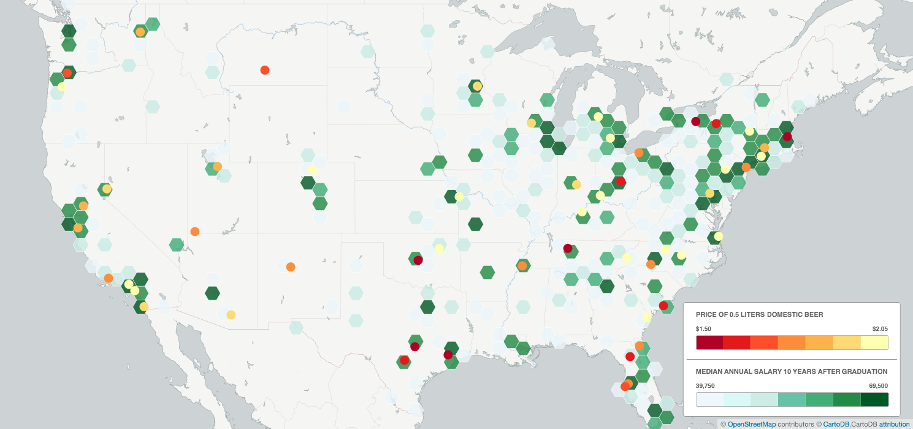

A website by Eric Wan
The first dataset I found was the 2011 median annual salary of people in America, 10 years after they graduated from an accredited American university. This data is provided by the Department of Education's website, College Scorecard, which I uncovered from visiting /r/datasets.
The entire dataset includes an incredible range of data - from percentage of students from each ethnic group that defaulted on student loans 3 years after graduation, to the number of students coming from households in the upper 10th percentile of annual income. It took a SIGNIFICANT amount of filtering to bring the set down to the data I was interested in, but it was well worth it. There are clearly a LARGE number of points, and I attempted to use a color scheme that would maintain legibility, but at this point, without randomly removing items, it would be impossible to further shrink the set.
The second dataset was taken from Numbeo, a website that visualizes and lists the current CPI (consumer price index) - cost of living - and details out many components that presumably are factored into the calculation. Prices of things like public transportation, rent, and 0.5 liters of domestic beer.
I represented this dataset in larger circles, despite the fact that the data was organized by city - this was because almost all items followed a regional trend, and this was the underlying data that I treated like the independent variable - what I expected would have an effect on the median salary. Therefore, it made the most sense to me to be able to see the salaries on top of the cost of beer.
There were many reasons why I chose to do beer instead of the full CPI. For starters, CPI of the city one graduates from only affects one's salary if one stays in the city they graduated from. The salaries were tied only to the school you graduated from, and were georeferenced based on the city the school is located in, while the cost of beer was directly tied to the city.
The second most obvious reason was that beer was infinitely more interesting than overall cost of living - my somewhat unsubtly implied hypothesis was that cheap beer would have a negative effect on one's salary down the road. I do not plan on doing any null hypothesis testing, but by just looking at this one map - there may be some correlation.
Below, I've split each dataset into the four even subsets - the salaries didn't play nicely with quartlies, so even distribution would have to do - and matched them up correspondingly. You can see that the dark green hexagons represent high concentrations of salaries in the specified range, and darker red circles represent a lower price of beer. Thus, an area of light green AND dark red meant there was both cheap booze and low income from that city's colleges.
Unfortunately, it becomes fairly obvious that there isn't a strong enough correlation. Perhaps in the very first, one can see some overlap, but as the data becomes more sparse in the higher income areas, one loses all hope in their null hypothesis.
This work was done as part of a class assignment for Georgia Tech's CS4464/6465 Fall 2016 (https://github.com/jacobeisenstein/gt-compj-class/). The opinions expressed here, if any, are solely those of the students working on this assignment and not of the Instructor or Georgia Tech.
{kind=link}
{kind=link}
{kind=link}
{kind=link}
{kind=link}